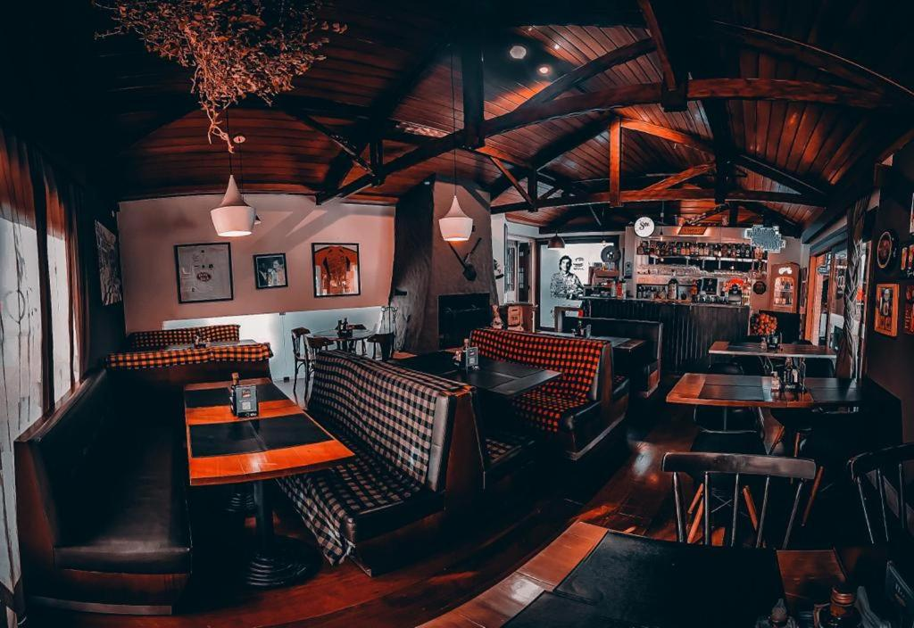
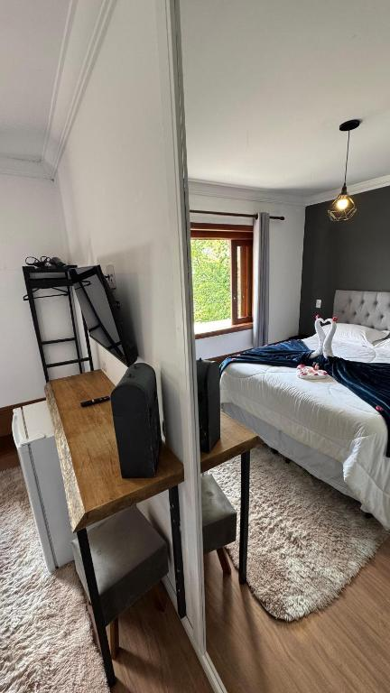

Comece sem pressa
Café da manhã buffet para dar início aos seus dias na serra.
SEU TEMPO, NO RITMO DA SERRA
Dias mais leves começam com uma boa escolha. Encontre aconchego, boa companhia e o prazer de estar em Campos do Jordão na Ti.co Pousada.
Quero viver esses dias Conheça a pousada pelas fotos ↓
02 / O JEITO TI.CO DE RECEBER
Entre um passeio e outro, tenha um lugar para voltar, desacelerar e aproveitar a companhia de quem veio com você.
Café da manhã buffet para dar início aos seus dias na serra.
Restaurante e bar na pousada, em ambientes que convidam à convivência.
Jardim, terraço e salão de jogos com bilhar para os momentos entre passeios.
Estacionamento privativo gratuito e Wi-Fi disponíveis na propriedade.

SEU CANTINHO NA SERRA03 / DESCANSO COM ACONCHEGO
Quartos com banheiro privativo, TV e os detalhes essenciais para uma estadia confortável. Há opções para diferentes formas de viajar.
Uma pausa a dois merece um lugar acolhedor. Consulte a acomodação disponível para as suas datas.
Consultar minha acomodação ↗Fotos ilustram os ambientes reais da pousada. A acomodação é confirmada no atendimento.04 / UM OLHAR MAIS DE PERTO
Espaços reais, detalhes da Ti.co.
Toque nas fotos para ampliar.
05 / SEU PRÓXIMO CAPÍTULO
Escolha as datas e fale diretamente com a pousada pelo WhatsApp. Receba informações sobre as acomodações, tarifas e condições de reserva.
1Conte quando e com quem você vem.
2Consulte as opções e o valor da estadia.
3Combine os detalhes com a pousada.
06 / O SEU DESTINO
Rua Inácio Caetano, 864
Campos do Jordão · São Paulo
Preencha as datas acima ou entre em contato pelo WhatsApp. As tarifas e a disponibilidade dependem do período, da acomodação e do número de hóspedes.
Sim. A propriedade informa estacionamento privativo gratuito e Wi-Fi gratuito. Confirme os detalhes para a sua estadia no atendimento.
A pousada informa quartos familiares e espaço infantil. Conte o número de adultos e as idades das crianças para receber uma opção adequada.
A confirmação, o pagamento, a política de cancelamento e os horários de entrada e saída devem ser combinados diretamente com a pousada antes de reservar.